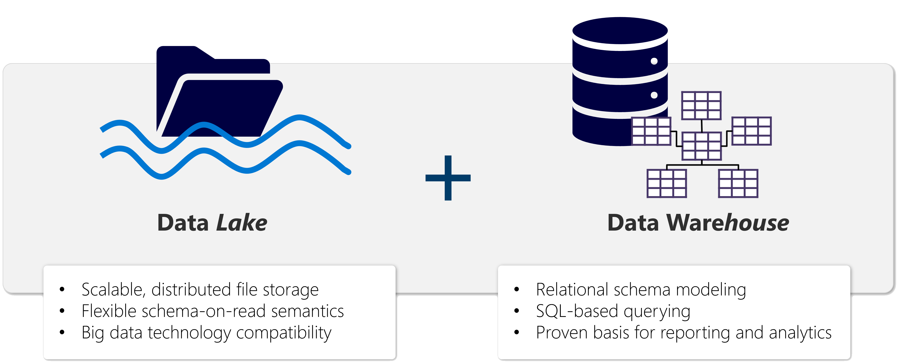
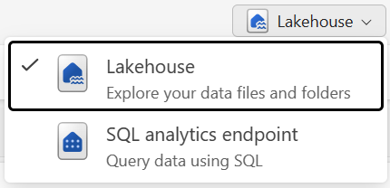

What Is a Lakehouse?
Data lake + data warehouse in one — combines flexible file storage with SQL-based analytical capabilities
Built on OneLake — uses Apache Spark and SQL compute engines to process data at scale
Eliminates the divide — no need to maintain separate systems for unstructured files and structured analytics
Handles everything — structured transactional data, semi-structured logs, IoT feeds, and raw files all in one place

A lakehouse combines data lake folder structure with data warehouse relational capabilities
Lakehouse Design — Tables & Files
A lakehouse organizes data into two main storage areas:
Tables/ Folder
Delta Lake tables — structured, queryable data
• SQL queries via SQL analytics endpoint
• Schema enforcement & ACID transactions
• Accessible in Power BI for reporting
• Automatic optimization & maintenance
Files/ Folder
Raw or semi-structured data in native format
• Any format: CSV, JSON, Parquet, images, docs
• Flexible exploration & processing
• Staged before transformation into tables
• No schema enforcement, no direct SQL
Schemas enabled by default — dbo created automatically; organize tables into logical groups (sales, marketing, hr)
Cross-workspace queries — use four-part namespace: workspace.lakehouse.schema.table
Two Ways to Work with a Lakehouse
Lakehouse Explorer
Add and interact with tables, files, and folders. Upload files, create tables, manage data. Add reference lakehouses to browse tables across multiple lakehouses side by side.
SQL Analytics Endpoint
Query Delta tables using T-SQL in read-only mode. Create views, functions, and apply SQL security. Cannot modify underlying data.

The two lakehouse modes — Explorer for managing data, SQL analytics endpoint for querying
Delta Lake Tables — The Core
Every table in a lakehouse is stored as Delta Lake — an open-source storage layer built on Parquet + transaction log.
Architecture: Parquet data files + _delta_log/ transaction log — enables both batch and streaming on the same data
Ingest & Transform Data
Five ways to get data into your lakehouse:
Shortcuts — Access Without Copying
Shortcuts reference external data (ADLS, S3, other Fabric items) — data appears as a folder in your lakehouse without duplication
Schema shortcuts map an entire schema to a folder of Delta tables in another lakehouse or ADLS Gen2
Identity-based access — OneLake uses your identity to authorize access to the target data
Query & Analyze Lakehouse Data
SQL Analytics Endpoint
Read-only T-SQL — auto-created with every lakehouse
Ad-hoc queries — investigate data, answer business questions
BI connections — Power BI, Excel, Azure Data Studio
SQL views — reusable query logic, business rules, curated data
Copilot — write T-SQL from natural language descriptions
Spark Notebooks
Spark SQL — familiar SQL syntax in notebook cells
PySpark — Python code with DataFrame API (df.select(), df.filter())
Exploratory analysis — patterns, outliers, relationships
Cross-workspace — join data across lakehouses via four-part namespace
Copilot — generate PySpark/SparkSQL from natural language
Power BI & Direct Lake
Power BI is the consumption layer — two ways to connect to lakehouse data:
SQL Analytics Endpoint
Analysts connect directly with Power BI or Excel to run ad-hoc queries and explore data before building reports.
Semantic Model
References specific lakehouse tables with defined relationships, measures, and business logic that reports consume.
Direct Lake mode (default) — reads Delta Lake Parquet files directly, no import/copy, fast performance, always current data
Copilot in Power BI — generates visualizations and answers business questions when semantic model has clear relationships and measures
Lakehouse Security
Layered access controls to secure data at multiple levels:
Lakehouse as AI Foundation
Well-structured lakehouse data is the foundation for intelligent experiences across Fabric:
Clear schemas + descriptive column names — make data accessible to both human analysts and AI-powered tools
Fabric IQ data agents — query your lakehouse tables through the SQL endpoint, translating natural language → SQL. Quality of answers depends on how well you structure your data.
Copilot in Power BI — generates reports and answers questions when it can reason over clearly defined tables and relationships
Semantic models — same lakehouse data feeds models that support natural language exploration across Microsoft 365
Good data engineering practices in the lakehouse create a reusable foundation for intelligent experiences across the platform.
Knowledge Check
What is a Microsoft Fabric lakehouse?
A relational database based on the Microsoft SQL Server database engine
A hierarchy of folders and files in Azure Data Lake Store Gen2
An analytical store that combines file storage flexibility of a data lake with SQL-based query capabilities of a data warehouse
What is the main difference between the lakehouse explorer and SQL analytics endpoint?
The lakehouse explorer provides read-only access, while the SQL analytics endpoint allows data modifications
Lakehouse explorer enables interaction with tables, files, and folders, while SQL analytics endpoint provides read-only T-SQL querying of Delta tables
Both provide identical functionality with different user interfaces
You want to include data in an external ADLS Gen2 location without copying. What should you do?
Create a Data pipeline with a Copy Data activity
Create a shortcut
Create a Dataflow Gen2 that extracts and loads it into a table
You have CSV files in Files/ and want to create Delta tables without writing code. What should you use?
A notebook with PySpark code
Load to Table
The SQL analytics endpoint
You want to use Apache Spark to interactively explore data. What should you do?
Create a notebook
Switch to the SQL analytics endpoint mode
Create a Dataflow Gen2
What connection mode does Power BI use by default with a lakehouse semantic model?
Import mode, which copies data into Power BI
DirectQuery mode, which queries the source in real-time
Direct Lake mode, which reads directly from Delta Lake files without copying data
×